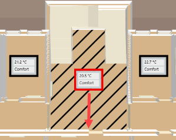

Move the Room Value Display on the Graphic
Scenario: The room value display is placed in the middle of the given room by default. The room value display can be manually moved to another position if the position is unfavorable.
- Select Applications > BIM Graphics > [Building graphic].
- Click Show floor list
 .
. - The floor list displays in the top left-hand corner of the graphic page.
- In the floor list, click the desired floor.
- The floor plan is displayed.
- Highlight the room value display (highlighted in red) and move it to the new position.
- The changed position remains if the BIM data is reimported. Editing may be necessary if rooms are merged or walls are moved during an update of BIM data.
- Click Save
 .
.
